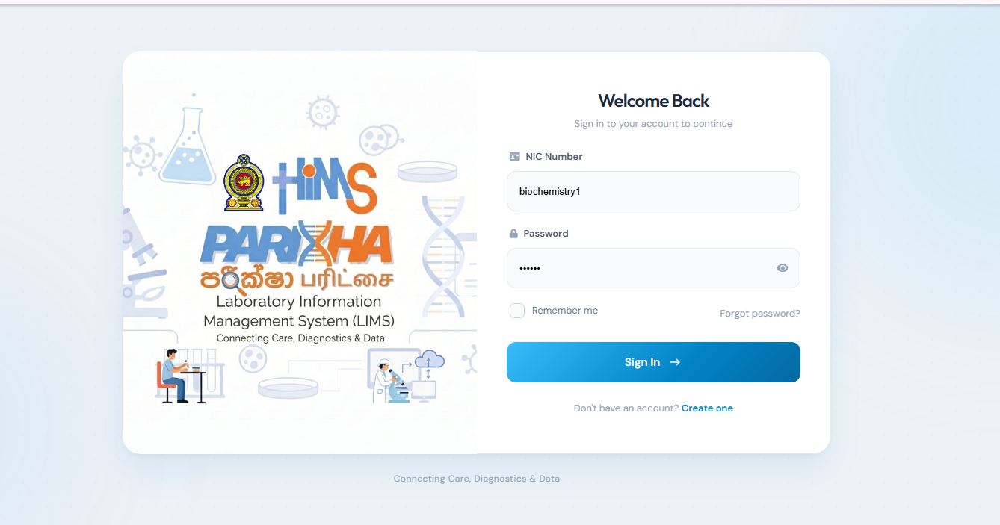

CASE STUDY · HEALTH INFORMATICS · TEAM PROJECT
Laboratory Information Management System.
Developed as part of the Hospital Information Management System (HIMS) for Teaching Hospital Peradeniya, while working as a member of the Loons Lab (Pvt) Ltd development team. My work contributed to laboratory workflows and the engineering required to integrate laboratory operations with the wider hospital information environment.
HIMSTeaching Hospital PeradeniyaLoons Lab (Pvt) LtdTeam DevelopmentHealth Informatics
Sanitized System Architecture
Replace with approved architecture artwork showing application, database, analyzer middleware, HIMS and reporting boundaries.
ARCHITECTURE PLACEHOLDERINTERFACE
Selected workflow screens.

SCREENSHOT 02Clinical result reporting
SCREENSHOT 03Template / configuration workflow
SCREENSHOT 04Analyzer / integration workflow